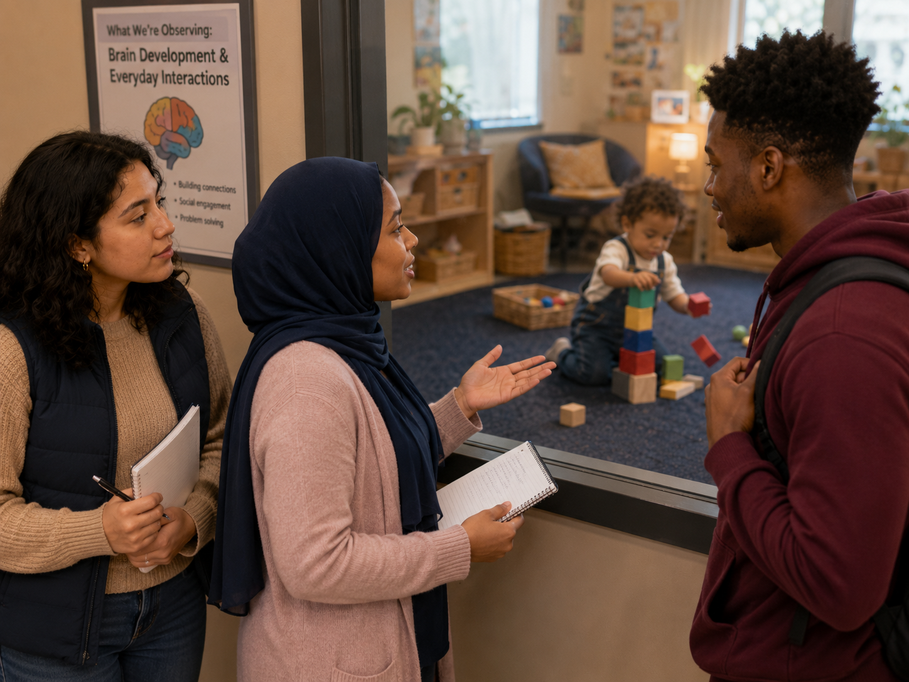

Why study the brain?
🔎 Choose the strongest response
Why is brain development important knowledge for early childhood educators?
Brain development, relationships, stress, health, play, and responsive care

Jordan: “So, according to this chapter, that’s not just a kid making noise with blocks?”
Aaliyah: “Nope. That’s problem-solving, motor development, sensory exploration, maybe language, maybe persistence…and a whole lot of brain connections.”
Maya: “Brain development sounds like it should be all neurons and diagrams, but it keeps coming back to ordinary things—talking with children, giving them safe places to explore, helping them calm down, feeding them well, letting them sleep, limiting screens, responding with warmth.”
Jordan: “So teachers are not brain surgeons, but we are brain builders?”
Maya: “A calm voice, a predictable routine, a story, a song, a chance to move, a safe boundary—those things shape children’s development.”
Aaliyah: “Positive experiences can help children grow, especially when adults understand what young brains need.”
Why is brain development important knowledge for early childhood educators?
Match each term with the best meaning.
A toddler stacks blocks, watches them fall, changes the arrangement, and tries again. Which interpretation is strongest?
A preschooler becomes overwhelmed during a noisy transition. Which educator response best supports regulation?
Which classroom plan best supports healthy brain development?
Why can appropriate boundaries support brain development?
Why does the chapter encourage thoughtful limits on screen use for young children?
Which principle best reflects trauma-informed early childhood practice?
Which statement best integrates Julian Chapter 4?
One ordinary classroom practice that can have an extraordinary effect on development is…
Healthy development is supported through repeated, responsive experiences rather than one isolated activity.
Did your response connect the practice to relationships, regulation, language, movement, sleep, nutrition, play, safety, or stress reduction?
Small practices become powerful when they are predictable, developmentally appropriate, culturally responsive, and repeated over time.